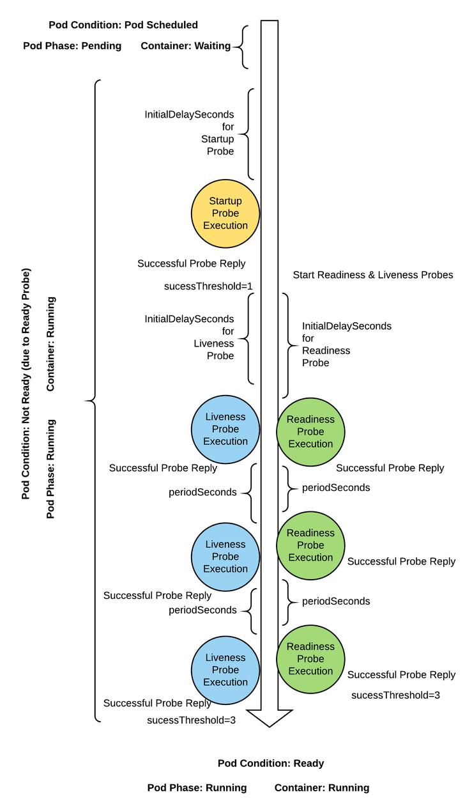
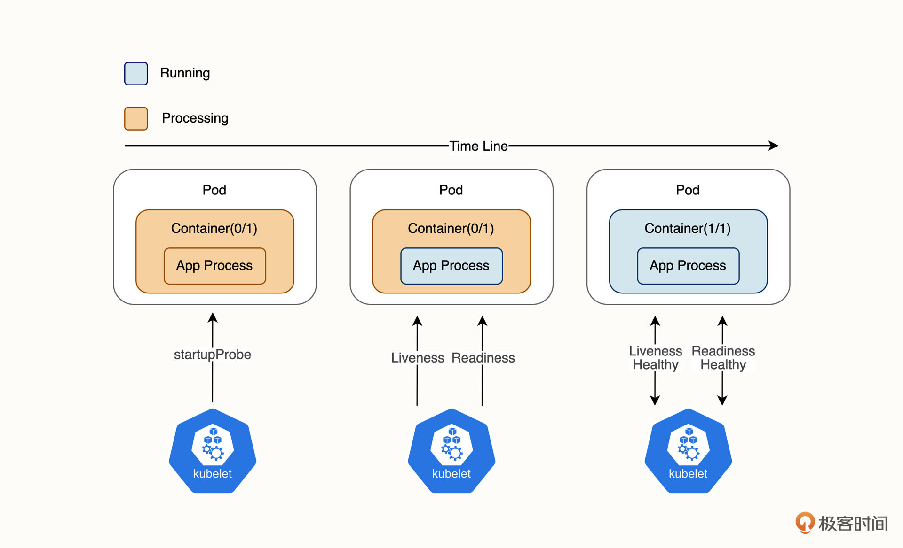

Pod 的健康检查
kubernetes 的健康检查类型一共有三种，分别是：Readiness、Liveness和StartupProbe。
Pod 和容器的状态
要想弄懂 kubernetes 的健康检查，我们需要先理解 Pod 和容器的状态。
Pod 的生命周期一共有下面这 5 个状态。
- Pending：正在创建 Pod，例如调度 Pod 和拉取镜像的阶段。
- Running：运行阶段，至少有一个容器正在启动或运行。
- Succeeded：运行成功，并且不会重新启动，例如 Job 创建的 Pod。
- Failed：Pod 的所有容器都停止了，并且至少有一个容器退出状态码非 0。
- Unknown：无法获取 Pod 的状态。
我们最常接触到的 Pod 状态是 Pending 和 Running。Pending 代表 Pod 正在创建中，而 Running 状态则要求至少有一个容器正在启动中或者正在运行。
而对于 Pod 中的容器，也有下面 3 种状态。
- Waiting：容器等待中，例如正在拉取镜像。
- Running：容器运行中，PID=1 的业务进程正在启动或运行。
- Terminated：容器终止中，例如正在删除 Pod。
当 Pod 处于 Running 状态时，代表至少有一个容器处于启动或运行状态。所以，我们只需要关注容器的 Running 状态就可以间接决定 Pod 的状态。而当容器状态为 Running 时，代表 PID=1 的业务进程正在启动或运行。
不过要注意的是，当业务进程还处于启动过程时，Pod 和容器都处于 Running 状态，但由于业务并没有完成启动，所以还不具备接收外部流量的条件。
这时候，光有一个 Running 状态是不够的，我们还需要一个能够描述 Pod 是否已经就绪并准备好接收外部请求的标识， 它就是 Pod 的 Ready 字段。
Ready 状态
在 kubernetes 中，Pod 的 Ready 字段用来标识是否已经就绪，它是由 kubelet 直接管理的， Ready 状态被记录在了 Pod Manifest 的 status.conditions 字段下。
可以通过 kubectl get pod xxx -oyaml 查看
$ kubectl get pod nginx-deployment-567cbc4d7c-w469c -oyaml
status:
conditions:
- lastProbeTime: null
lastTransitionTime: "2025-03-22T11:40:08Z"
status: "True"
type: PodReadyToStartContainers
- lastProbeTime: null
lastTransitionTime: "2025-03-21T15:29:12Z"
status: "True"
type: Initialized
- lastProbeTime: null
lastTransitionTime: "2025-03-22T11:40:08Z"
status: "True"
type: Ready
- lastProbeTime: null
lastTransitionTime: "2025-03-22T11:40:08Z"
status: "True"
type: ContainersReady
- lastProbeTime: null
lastTransitionTime: "2025-03-21T15:29:12Z"
status: "True"
type: PodScheduled
containerStatuses:
- containerID: containerd://ec3897401074c70cd5f3cdfc1b5e59033ccfda734ff0e4a86cc88ee745ba414d
image: docker.io/library/nginx:1.26.2
imageID: docker.io/library/nginx@sha256:43a626425e38f1d80cd17303c5d44b5f5b22b8b10d0c0f1e50b047cf4e1ad5dd
lastState:
terminated:
containerID: containerd://0fb7954ee9f2e7e3b933252545c48b6fbba25e8036846e4f6f7da72730df4f0e
exitCode: 255
finishedAt: "2025-03-22T11:40:02Z"
reason: Unknown
startedAt: "2025-03-21T15:30:53Z"
name: nginx
ready: true
restartCount: 1
started: true
state:
running:
startedAt: "2025-03-22T11:40:08Z"
-
容器式运行的应用类似于“黑盒”，为了便于平台对其进行监测，云原生应用应该输出用于监视自身API
- 包括健康状态、指标、分布式跟踪和日志等
- 至少应该提供用于健康状态监测的API
-
Pod 支持的健康检查类型
-
startup Probe
- 探测应用是否启动完成，如果在 failureThreshold*periodSeconds 周期内未就绪，则应用进程会被重启。
-
liveness Probe
- 探测应用是否处于健康状态，如果不健康则删除并重新创建容器
-
readiness Probe
- 探测应用是否就绪并且处于正常服务状态，如果不正常则不会接收来自 Kubernetes Service 的流量。
-
-
三种健康检查探针
- 在容器内运行命令，通过在容器里运行一条命令并检查命令的退出状态码来判断业务健康状态。
...... lifecycle: postStart: exec: command: - cat - /tmp/healthy ......- TCP 端口状态判断，通过是否能够和指定端口建立连接来判断业务健康状态。
...... lifecycle: postStart: tcpSocket: port:8080 ......- HTTP 请求，通过向容器发起 HTTP 请求，并识别请求响应代码来判断业务状态。
...... lifecycle: postStart: httpGet: path:/ # url地址 port:80 # 端口号 host:192.168.209.128 # 主机地址 scheme: HTTP # 支持的协议，http或https ......- 在这三种健康检查方式中，HTTP 请求的检查方式是我们在日常工作中最常用到的一种。
-
配置参数
- initialDelaySeconds
- periodSeconds
- timeoutSeconds
- successThreshold
- failureThreshold

kubelet 也是会检测Pod状态的，但是标准只是Pod是否处于 Running状态
健康探针配置示例
-
startup probes 使用了 Exec Action(1.16版本新增,如果配置了startupProbe探针，就会先禁止其他的探针，直到startupProbe探针成功为止，一旦成功将不再进行探测。)
-
liveness probes 和 readiness probes 使用 HTTPGet Action
-
测试效果
-
liveness
- URL “/livez” 支持以POST方法为livez参数设定不同值，非OK值都以5xx响应码响应；
-
readiness
- URL “/readyz” 支持以POST方法为readyz参数设定不同值，非OK值都以5xx响应码响应；
-
apiVersion: v1
kind: Pod
metadata:
name: pod-probe-demo
namespace: default
spec:
containers:
- name: demo
image: ikubernetes/demoapp:v1.0
imagePullPolicy: IfNotPresent
startupProbe:
exec:
command: ['/bin/sh','-c','test','"$(curl -s 127.0.0.1/livez)"=="OK"']
initialDelaySeconds: 0
failureThreshold: 5
periodSeconds: 10
successThreshold: 1
timeoutSeconds: 1
livenessProbe:
httpGet:
path: '/livez'
port: 80
scheme: HTTP
initialDelaySeconds: 15
failureThreshold: 5
periodSeconds: 10
successThreshold: 1
timeoutSeconds: 2
readinessProbe:
httpGet:
path: '/readyz'
port: 80
scheme: HTTP
initialDelaySeconds: 15
failureThreshold: 5
periodSeconds: 10
successThreshold: 1
timeoutSeconds: 2
restartPolicy: Always
Readiness
-
readinessProbe 字段，它为 kubernetes Readiness 探针提供了必要的信息。
-
httpGet 下的几个字段：
- path 字段的含义是“通过请求 readyz 接口来判断”
- Port 字段指定了后端服务的监听端口 80
- scheme 字段代表协议
- 探针请求的完整路径为：http://PodIP:80/readyz,相当于以 Get 的方式主动访问业务接口，当接口返回 200-399 状态码时，则视为本次探针请求成功。
-
initialDelaySeconds 的含义是在容器启动之后，延迟 10 秒钟再进行第一次探针检查。
-
ailureThreshold 的含义是，如果连续 5 次探针失败则代表 Readiness 探针失败，Pod 状态为 NotReady，此时 Pod 不会接收外部请求。
-
periodSeconds 的含义是探针每 10 秒钟轮询检测 1 次。
-
successThreshold 的含义是只要探针成功 1 次就代表探针成功了，Pod 状态为 Ready 表示可以接收外部请求。
-
timeoutSeconds 代表探针的超时时间为 2 秒。
-
综合这些配置信息，我们可以得出几个重要的数字。在 Pod 启动之后，如果在 60秒内（initialDelaySeconds + failureThreshold * periodSeconds） 不能通过健康检查， Pod 将处于非就绪状态。
当 Pod 处于正常的运行状态时，如果业务突然产生故障，健康检查会在50秒内（failureThreshold * periodSeconds） 识别出业务的不健康状态；当 Pod 业务恢复健康时，健康检查会在 10秒内（successThreshold * periodSeconds） 识别出业务已恢复。
Readiness 探针的一个非常重要的作用是，它负责找出业务状态不健康的 Pod，并且将它从 Service EndPoints 列表移除，使它无法接收到外部请求。如果 Pod 的 Readiness 探针一直无法通过，那么 Pod 将一直无法接收外部请求，如下图所示。
Liveness
Liveness 又称为存活探针，相比 Readiness 探针，它还能够在检测到 Pod 处于不健康状态时自动将 Pod 重启。
Liveness 探针和 Readiness 探针非常类似，Liveness 探针是通过 livenessProbe 字段来配置的，livenessProbe 字段下面的每个字段的作用和 Readiness 探针都几乎一致，这里就不再赘述了。
当 Liveness 探针失败时，它将自动重启业务不健康的 Pod
需要注意的是，Liveness 和 Readiness 探针是 独立并行 的，它们之间并没有相互等待关系。
StartupProbe
相比较 Liveness 和 Readiness 探针在运行阶段的探测特性，StartupProbe 是一种专门针对业务在启动阶段设计的探针。
对于一些大型的 Java 应用来说，往往需要数分钟时间才能够完成启动。
这意味着，对于启动非常慢的大型应用，如果我们按照上面的例子来配置 Readiness 和 Liveness 探针，Pod 将因为探针失败而永远无法启动。
那么，怎么解决这个问题呢？你可能首先会想到，是不是调整探针第一次探测的延迟时间就可以了？比如将 initialDelaySeconds 字段的值从 10 秒钟修改到 120 秒。这当然是可以的，但如果启动时间不是 120 秒，或者你不太确定呢？那似乎可以在修改了 initialDelaySeconds 的基础上再将失败次数 failureThreshold 或者探测间隔 periodSeconds 加大。
这种做法虽然能解决问题，但缺点也是明显的，为了兼容应用启动慢的问题，我们主动降低了 kubernetes 检测 Pod 健康状态的频率，这会延迟 kubernetes 感知故障的速度。
其实，Readiness 和 Liveness 主要用来检查的是处于运行过程中业务，因为启动过慢的问题而去调整 Readiness 和 Liveness 参数并不是最佳实践。这类问题我们可以通过 StartupProbe 来解决。
StartupProbe 探针特别适用于业务应用启动慢的场景。当 Pod 启动时，如果配置了 StartupProbe，那么 Readiness 和 Liveness 探针都将被临时禁用，直到 StartupProbe 探针返回成功才会启用 Readiness 和 Liveness 探针，这也就避免了 Readiness 和 Liveness 在应用启动阶段造成的干扰。也就是说，我们只要为业务配置合理的 StartupProbe 探针，就可以解决应用启动慢导致其他探针认为 Pod 不健康的问题。
StartupProbe 是通过 startupProbe 字段来配置的。在我们刚才提到的 Java 应用的例子中，我们可以为 StartupProbe 配置足够大的 initialDelaySeconds 来让业务有足够的时间完成启动过程。
如果一个工作负载内同时定义了这三种探针，情况会变得有些复杂，你可以结合下面这张图来理解。

Pod 启动时，三种探针的执行顺序主要可以分成三个阶段。
- 第一阶段：Pod 已启动，容器已启动，业务进程正在启动中，此时 StartupProbe 开始工作，由于 StartupProbe 还未成功，当前 Pod 的容器处于 Not Ready(0/1) 的状态。
- 第二阶段：随着时间推移，StartupProbe 探针成功，Readine 和 Liveness 探针开始并行工作，此时由于 Readine 探针还未成功，当前 Pod 的容器仍然处于 Not Ready(0/1) 的状态。
- 第三阶段：随着 Readine 和 Liveness 的探测成功，当前 Pod 的容器转为 Ready(1/1) 的状态，Service EndPoints 将 Pod 加入到列表当中，Pod 开始接收外部请求。